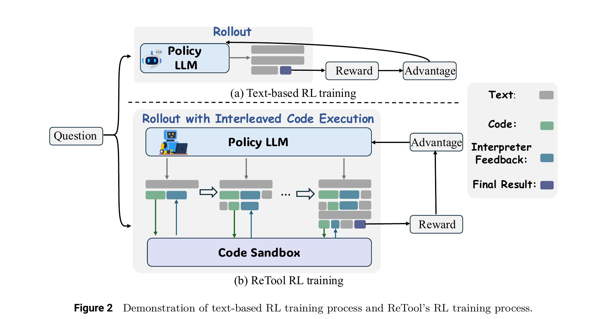
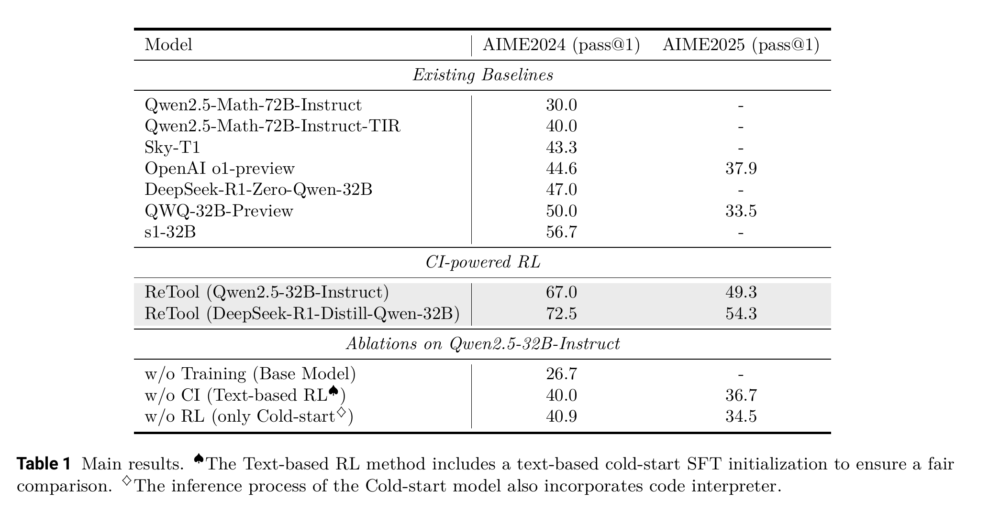
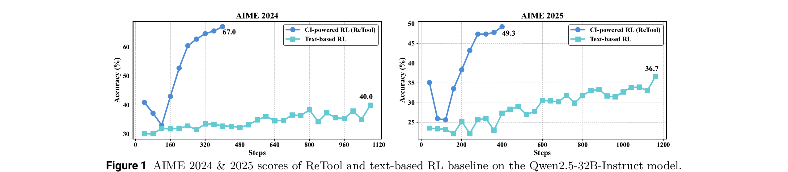
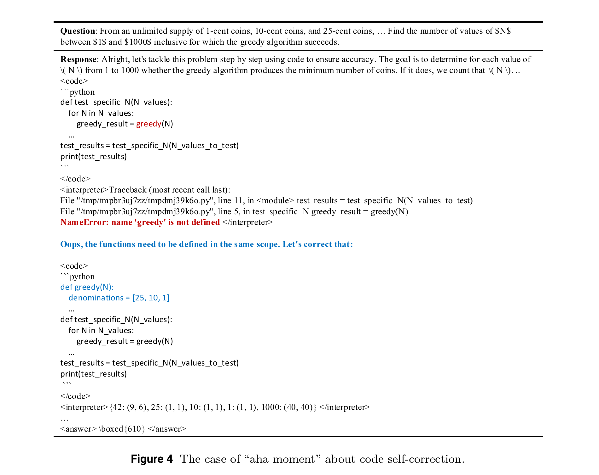
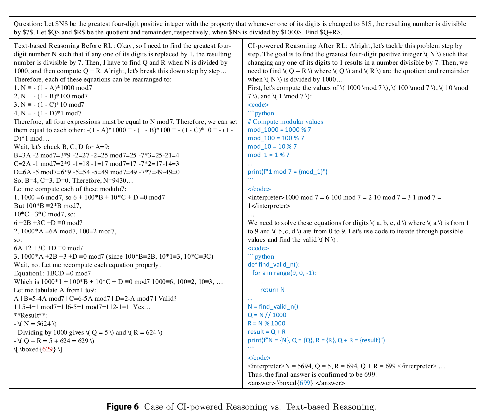

ReTool
Where text-only reasoning hits a wall
Reasoning models like OpenAI o1 and DeepSeek-R1 learn to produce long chains of thought purely in text, and this works very well for problems that reward patient, step-by-step argument.
But some problems are not naturally argument-shaped — they are naturally computation-shaped: geometric reasoning, exact arithmetic over many cases, solving a system of equations, checking 1,000 candidate values one by one. Doing this in pure text means the model has to carry out arithmetic and bookkeeping inside its own token stream, where a single slipped digit silently corrupts every step after it.
A code interpreter does not make these mistakes. ReTool asks: instead of teaching a model to talk about running code, can reinforcement learning teach it to actually stop, run real code, read the real output, and keep reasoning — and to decide entirely on its own when that is worth doing?
From a text-only rollout to a rollout with real code execution

In ordinary text-based RL (top), the policy LLM generates one text rollout, which is scored once by a reward model, producing one advantage. In ReTool's RL (bottom), the rollout is built turn by turn: the policy writes a chunk of text and some code, a real code sandbox executes that code, and its output is spliced back into the same rollout before the model continues — repeating until a final answer is produced.
The rollout: one trajectory, three kinds of tokens
$t_1$ — a chunk of natural-language reasoning the model writes; $c_1$ — a code block the
model writes, marked off with <code>…</code> tags; $f_1$ — the
sandbox's real feedback (printed output, or an error traceback if the code crashed), spliced back in
between <interpreter>…</interpreter> tags; $o$ — the final answer,
inside \boxed{}; $\oplus$ — concatenation into one single token sequence.
Whenever the model emits </code>, generation pauses, the code is sent to a real
sandbox, and the result is fed back before generation resumes — it can write more code, or give
its final answer.
“You now have the ability to selectively write executable Python code to enhance your reasoning process. The Python code will be executed by an external sandbox, and the output … can be returned to aid your reasoning.” Nothing tells the model when to use this — that timing is exactly what RL has to teach it.
Before any RL: teaching the format with cold-start data
RL explores by trying variations of what a model already does — so the base model first needs
some ability to use the <code>/<interpreter> protocol at
all. ReTool builds this with a two-step pipeline, entirely before RL begins:
- Collect existing, verified text-only reasoning traces (filtered by human review and by DeepSeek-R1 itself), giving a dataset $D_{init}$.
- Automatically rewrite each trace: replace manual calculation steps with the equivalent code block and its real execution output, while leaving the surrounding reasoning — including any failed attempts — untouched. Keep only traces that pass both a format check and an answer-correctness check, giving a code-augmented dataset $D_{CI}$.
The base model is then supervised-fine-tuned on $D_{CI}$. This cold start is not where the model learns good tool-use strategy — it only learns the mechanics of the protocol. Strategy is what the RL stage has to discover.
Training objective: PPO over a hybrid trajectory
$r_t(\theta)=\dfrac{\pi_\theta(o_t\mid q,o_{<t};\,CI)}{\pi_{\theta_{old}}(o_t\mid q,o_{<t};\,CI)}$ — ratio of the current policy's probability for token $o_t$ to the old policy's; $q,a$ — question and ground-truth answer, drawn from the training set $D$; $o_{\le t}$ — the rollout so far, a mix of reasoning, code, and interpreter-feedback tokens, sampled from the old policy $\pi_{\theta_{old}}$; the $CI$ in $\pi_\theta(\cdot\mid q,o_{<t};CI)$ marks that the real code interpreter's output is already sitting inside $o_{<t}$ when the model predicts $o_t$; $\hat A_t$ — estimated advantage at token $t$; $\varepsilon$ — clip range.
Unlike DeepSeekMath and DeepSeek-R1, ReTool trains with plain PPO, which needs a learned value function to produce $\hat A_t$ — not GRPO's group-relative advantage from sampling many rollouts per question.
Intuition: the same clipped ratio, now over a longer story
The clipping mechanism itself is exactly the one from ordinary PPO/GRPO training: don't let a single update trust a rollout's advantage so much that it moves the policy's probability for a token far outside what the old policy actually assigned.
What's new is what counts as the trajectory. A token $o_t$ here might be part of the model's own reasoning, part of a code block it chose to write, or part of the interpreter's feedback that got spliced in. The ratio $r_t(\theta)$ is computed the same way at every position — but credit for a good final answer now has to flow back through turns where the model decided to hand control to the sandbox, not just through turns where it kept talking.
This is exactly why the reward can't just check "did it reach the answer" in a vacuum — the policy is being credited for a strategy that includes when to call the tool, not only what it says.
Reward design: correctness only, nothing else
$a$ — the ground-truth answer; $\hat a$ — the model's final predicted answer, read out of
its \boxed{}; is_equivalent — a rule-based checker, not a learned
model. That's the entire reward: $+1$ for a correct final answer, $-1$ for anything else.
It would be tempting to also reward "code executed successfully" as a shaping signal. ReTool's authors deliberately leave this out: a reward for executability alone is something a model can collect by writing any code that runs, whether or not it helps — a direct invitation to reward hacking. A correctness-only reward forces every code call to earn its keep by actually contributing to the right final answer.
Two engineering details that make this trainable at scale
The text between <interpreter>…</interpreter> did not come from
the policy — it came from the sandbox. Those tokens are excluded from the loss entirely, so the
model is never pushed to "predict" output it didn't generate, and its own coherent reasoning tokens
aren't disrupted by foreign content sitting in the middle of them.
When </code> is detected, everything generated so far is cached. Only the new
interpreter-feedback tokens need their KV-cache computed and appended when generation resumes —
the whole prefix doesn't need to be recomputed, which is what makes multi-turn rollouts with real
code execution affordable at RL scale.
Both are specific to the fact that part of every rollout now comes from outside the model — an asynchronous sandbox pool handles the actual code execution so slow executions don't stall the rest of training.
The headline result

On Qwen2.5-32B-Instruct, ReTool reaches 67.0% on AIME2024 and 49.3% on AIME2025 — beating every listed baseline, including OpenAI's o1-preview (44.6% / 37.9%) and the 72B Qwen2.5-Math-Instruct-TIR model (40.0%). Swapping in a stronger backbone (DeepSeek-R1-Distill-Qwen-32B) pushes this further, to 72.5% / 54.3%.
Where do the gains actually come from?
| Configuration | AIME2024 | Δ vs. base |
|---|---|---|
| Base model, no training | 26.7% | — |
| + cold-start SFT only, no RL | 40.9% | +14.2 |
| + RL, text-only, no code interpreter | 40.0% | +13.3 |
| + RL, with code interpreter (ReTool) | 67.0% | +40.3 |
Cold-start SFT alone (40.9%) and RL without tool use (40.0%) land within a point of each other — RL by itself, on pure text, buys almost nothing here that SFT hadn't already bought. The 27-point jump only shows up once RL is combined with the ability to call a real code interpreter: the gain is specifically from learning when and how to use the tool, not from RL or tools alone.
Same destination, far fewer steps

ReTool's accuracy curve (blue) shoots up almost immediately and plateaus around step 400. The text-based RL baseline (teal) is still climbing slowly past step 1000 and never catches up. ReTool reaches a higher accuracy using only about 37% of the training steps the text-only baseline needs — tool use doesn't just raise the ceiling, it makes the exploration problem itself easier to solve.
Six signals of a strategy changing during RL
![Six line charts from the ReTool paper tracking behavior over 400 RL training steps on AIME2024/2025: (a) response length drops sharply from about 10000 to 2000 tokens then rises back to about 6000; (b) code ratio rises from under 20 percent to nearly 100 percent of responses; (c) code lines rise steadily from under 10 to over 40; (d) total correct code counts on the test set rise from under 1000 to about 5000; (e) code pass rate stays near 100 percent for correct responses but declines for incorrect ones; (f) code invocation timing shifts earlier in the response, from about 0.62 to about 0.53.](images/fig3_behavior_evolution.png)
All six metrics are computed directly from the model's own generated responses at each saved RL checkpoint — nothing here was specified by hand; it all emerges from optimizing the single correctness reward.
Reading the six panels together
- (a) Response length falls sharply at first (code replaces laborious manual calculation), then rises again as the model learns more elaborate code strategies — ending about 40% shorter than before RL (10k → 6k tokens).
- (b) Code ratio climbs from under 20% to nearly 98% of responses: the model goes from rarely bothering with code to using it almost everywhere.
- (c) Code lines keep rising throughout training — nearly 5× longer by the end — as the model's code tackles more of the problem, not just the easy arithmetic.
- (d) correct code counts on the test set rise 5× alongside it.
- (e) Code pass rate stays near 100% for responses that end up correct, but declines for ones that end up wrong — buggy code is a leading indicator of a wrong final answer.
- (f) Code invocation timing shifts earlier in the response: the model learns to reach for the tool sooner rather than reasoning in text first and only checking at the end.
An emergent “aha moment”: code self-correction

Here the model's first code block calls a function, greedy(), that was never defined
— the sandbox returns a real NameError traceback. The model reads that error,
responds “Oops, the functions need to be defined in the same scope. Let’s correct
that”, and rewrites working code.
No training example ever explicitly demonstrated this fix-after-error behavior — it emerged purely because the correctness reward only pays off if the model keeps going after a crash instead of giving up.
What the code is actually for shifts, too
![Figure 5 from the ReTool paper: word clouds and pie charts of code purposes before and after RL training. Before RL, calculation dominates at 79.1 percent, with verification at 10.7 percent and smaller slices for probability calculation, computation, and data processing. After RL, calculation drops to 51.4 percent, with verification at 8.63 percent and new, larger slices for optimization (7.58 percent), geometric calculation (4.65 percent), solution search (3.82 percent), and probability calculation (2.31 percent).](images/fig5_code_purpose.png)
Before RL, code is used almost entirely for raw calculation (79.1% of code snippets). After RL, calculation's share drops to 51.4%, and new categories gain ground: optimization, geometric calculation, solution search. The model isn't just calculating more accurately — it's discovered more distinct roles code can play in a solution.
Same question, two reasoning styles

Same four-digit-integer question, two transcripts. Text-only reasoning (left) hand-derives modular
arithmetic across many lines and lands on the wrong answer, 629 — a single slipped
step upstream corrupts everything after it. CI-powered reasoning (right) offloads the same arithmetic
to two short code blocks and reaches the correct answer, 699, confirmed by the
interpreter itself.
Tying back to the course's RL arc
- DeepSeekMath introduced GRPO: group-relative advantages from many sampled rollouts, no value function.
- DeepSeek-R1 reused GRPO unchanged, but applied it to long, free-form reasoning chains verified only by a rule-based correctness reward (RLVR).
- ReTool keeps the same ingredients — a clipped policy-gradient objective, a simple rule-based outcome reward — but widens what a “rollout” is allowed to contain: not just the model's own tokens, but real feedback from an external tool the model chooses to call.
Every one of these papers is the same underlying idea — sample trajectories, score them by whether they reached the right answer, push up the ones that worked — applied to a progressively richer notion of what a trajectory is: a single answer, then a long reasoning chain, then a reasoning chain that can reach out into the world and act. That progression is exactly what “agentic RL” means.
References
- Feng, Huang, Qu, Zhang, Qin, Zhong, Jiang, Chi, Zhong. ReTool: Reinforcement Learning for Strategic Tool Use in LLMs. ByteDance Seed, 2025. arxiv.org/abs/2504.11536
- Project page: retool-rl.github.io
- MarkTechPost. ReTool: A Tool-Augmented Reinforcement Learning Framework for Optimizing LLM Reasoning with Computational Tools. marktechpost.com
- Schulman, Wolski, Dhariwal, Radford, Klimov. Proximal Policy Optimization Algorithms. 2017. arxiv.org/abs/1707.06347 — the PPO algorithm ReTool trains with.
- DeepSeek-AI et al. DeepSeek-R1: Incentivizing Reasoning Capability in LLMs via Reinforcement Learning. 2025. arxiv.org/abs/2501.12948